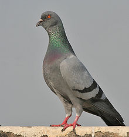
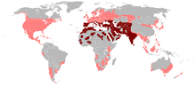
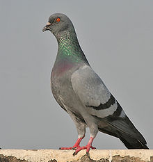
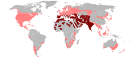

| Rock Pigeon | |
|---|---|
|  | |
| Adult C. l. intermedia in India | |
| Conservation status | |
| Binomial name | |
| Columba livia Gmelin, 1789[2] |
|
|  | |
| Distribution |
| Rock Pigeon | |
|---|---|
|  | |
| Adult C. l. intermedia in India | |
| Conservation status | |
| Binomial name | |
| Columba livia Gmelin, 1789[2] |
|
|  | |
| Distribution |
The Rock Pigeon (Columba livia), or Rock Dove, is a member of the bird family Columbidae (doves and pigeons).[3] In common usage, this bird is often simply referred to as the "pigeon". The species includes the domestic pigeon (including the fancy pigeon), and escaped domestic pigeons have given rise to feral populations around the world.[4]
Wild Rock Pigeons are pale grey with two black bars on each wing, although domestic and feral pigeons are very variable in colour and pattern. There are few visible differences between males and females.[5] The species is generally monogamous, with two squeakers (young) per brood. Both parents care for the young for a time.[6]
Habitats include various open and semi-open environments, including agricultural and urban areas. Cliffs and rock ledges are used for roosting and breeding in the wild. Originally found wild in Europe, North Africa, and western Asia, feral Rock Pigeons have become established in cities around the world. The species is abundant, with an estimated population of 17 to 28 million feral and wild birds in Europe.[1]

_in_Kolkata_I_IMG_9762.jpg){kind=link}
{kind=link}